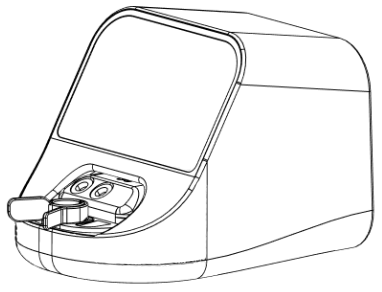

DaVitri™
User Manual

DaVitri model number: (01) 08437021820058
Caution: United States law restricts this device to sale by or on the order of a physician.
Table of contents
4. Instructions for Use
4.1. DaVitri Dish labelingn
4.2. Oocyte Vitrification Preparation
4.3. Removal and Disposal of the DaVitri Dish
4.4. WIFI Connection
4.5. Cybersecurity
1. General Information
1.1. Brief Device Description
DaVitri is a medical device which automates the vitrification preparation of human mature MII oocytes. The system comprises the DaVitri Station, the DaVitri Dish and a software interface.
DaVitri Station: The Station is the mechanical/electrical component of the equipment. This table-top unit provides a touch screen control that activates the steps of the pre-vitrification cycle including fluid exchanges and environmental management. Prior to the activation of the pre-vitrification cycle, the operator loads standard commercial solutions from Kitazato kits that facilitate pre-vitrification with ES and VS at room temperature. There are no user-selected options. Once in operation, the Station will show progress of the cycle. The Station has an internal independent battery power supply which allows for operation without connection to an AC power source. The Station is supplied non-sterile and its packaging includes:
DaVitri Dish: The DaVitri Dish is an individually packaged, sterile, single-use, disposable, cartridge. Once the user initiates the automated process using the touch screen, the system allows the user to load the dish into the station. The pre-vitrification reagents are manually loaded into two reservoirs in the dish. The priming process is started after the reagents are loaded into the fluid reservoir chambers in the DaVitri Dish (see instructions below). During priming, microfluidic pumps (in the station) control the flow of reagents to and from the central well, which is covered with a cap.
- DaVitri Station which comprises the system housing, internal hardware, touch screen user interface, and embedded software programmed with the pre-vitrification protocol. The System does not require any assembly by the user.
- AC power connector, DC power converter.
Note: Electrical Isolation The device is designed with a built-in electrical isolation system to ensure safety and protect the user from potential electrical hazards. This isolation is achieved through the medical grade power supply delivered with the system MeanWell GEM40I15-JP1
DaVitri is ONLY compatible with vitrification media manufactured by Kitazato. Media should be stored following the Kitazato instructions for use.
DaVitri Dish: The DaVitri Dish is an individually packaged, sterile, single-use, disposable, cartridge. Once the user initiates the automated process using the touch screen, the system allows the user to load the dish into the station. The pre-vitrification reagents are manually loaded into two reservoirs in the dish. The priming process is started after the reagents are loaded into the fluid reservoir chambers in the DaVitri Dish (see instructions below). During priming, microfluidic pumps (in the station) control the flow of reagents to and from the central well, which is covered with a cap.
DaVitri Station and DaVitri Dish (Unloaded)
1.2. Indication for Use
The DaVitri Vitrification System is indicated for use in the preparation and pre-vitrification of (MII) oocytes.
1.3. Functionalities
DaVitri has a single operational protocol:
Pre Vitrification: During this process, vitrification reagents are driven from the fluid reservoirs to the central DaVitri well. Fluid exchange takes place at the center well where the oocytes are located.
Pre Vitrification: During this process, vitrification reagents are driven from the fluid reservoirs to the central DaVitri well. Fluid exchange takes place at the center well where the oocytes are located.
1.4. Clinical Workflow
DaVitri has a single operational protocol:
The following diagram illustrates the clinical workflow steps of DaVitri for the oocyte cryo protocol, along with associated times.
The following diagram illustrates the clinical workflow steps of DaVitri for the oocyte cryo protocol, along with associated times.
---
DaVitri Dish package opened.
---
Dish inserted in DaVitri Station.
---
Pre-vitrification reagents loaded.
---
“Start priming” pressed.
Priming
2min12sec
2min12sec
Ready for oocyte loading into the well.
< 5min
Oocyte introduced.
---
“Start protocol pressed”.
10min
Protocol ended.
75sec
Oocytes loaded on cryogenic device.
15 sec
Device in LN2
DaVitri CRYO Protocol
1.5. Contraindications
There are no contraindications for use of the DaVitri system.
1.6. Sterilization Information
The DaVitri Station is reusable and non-sterile. It should be disinfected after use per the instructions in this user manual (see 5.Cleaning and disinfection).
After use, discard each DaVitri Dish with the vitrification media, into a biohazard container, or wherever used lab consumables (i.e pipettes, petri dishes, needles) are discarded.
The DaVitri Dish is provided sterile in a pouch, and is intended for Single Use Only. According to the guidance and principles given in the ISO 10993 standards, the DaVitri Dish is a consumable intended to be into direct contact with biological tissues or cells (oocytes).
After use, discard each DaVitri Dish with the vitrification media, into a biohazard container, or wherever used lab consumables (i.e pipettes, petri dishes, needles) are discarded.
Note: Discard the DaVitri Dish loaded with used vitrification media. Do not empty the DaVitri Dish, or the fluid reservoirs prior to discarding.
Neither the sterility nor functionality of a reused DaVitri Dish can be guaranteed. An expiration date (or “use before” date) is marked on the label of each DaVitri Dish package. The DaVitri Dish has been sterilized by gamma irradiation. Packaging of the dish must always be opened under a laminar flow hood.
1.7. Precautions
Location Usage: DaVitri should be used in an embryology laboratory under a laminar flow hood.
Inspect DaVitri Dishes: Prior to use of the DaVitri Dish, inspect the DaVitri Dish packaging for any defects. Do not use the DaVitri Dish if packaging is opened/damaged, or if DaVitri Dish sterilization or integrity is compromised.
Inspect DaVitri Station: Prior to use of the DaVitri Station, inspect the Station for integrity. If there is any damage to the Station, notify Overture Life, immediately.
Expertise: The System should only be used by embryologists or lab technicians who have expertise in handling oocytes and performing in vitro fertilization lab procedures.
Inspect DaVitri Dishes: Prior to use of the DaVitri Dish, inspect the DaVitri Dish packaging for any defects. Do not use the DaVitri Dish if packaging is opened/damaged, or if DaVitri Dish sterilization or integrity is compromised.
Inspect DaVitri Station: Prior to use of the DaVitri Station, inspect the Station for integrity. If there is any damage to the Station, notify Overture Life, immediately.
Expertise: The System should only be used by embryologists or lab technicians who have expertise in handling oocytes and performing in vitro fertilization lab procedures.
1.8. Support
For technical questions and support for the DaVitri System, email: info@overture.life.
1.9. Labeling
The Station must provide a label like the one shown in the picture placed at the bottom of the device.
Where the following fields are used:
(01) GTIN (20) Revision (11) Date of manufacturing (21) Serial Number (422) Origin ES
(01) GTIN (20) Revision (11) Date of manufacturing (21) Serial Number (422) Origin ES
2. Power Supply
DaVitri has the following operational modes:
1. Mains Mode: DaVitri is connected to a universal (110 - 230 VAC) power supply. This is considered the normal operating mode. Charging of the battery can be active or not.
2. Charging Only Mode: DaVitri battery is charging (connected to a power source.) DaVitri is OFF and no user interaction is possible.
3. Battery Mode: DaVitri is operating on battery power and is not connected to an external power source. DaVitri can function in this mode and run the operating protocol (vitrification prep) in this mode for at least 6 hours when the battery is fully charged. The system will not function if the battery is insufficiently charged.
The icon for battery status is located on the top right corner of the screen, and will be highlighted when the battery is charging.
To switch on the unit either in battery or mains mode the power button located at the back cover must be pressed longer than 1 second.
The power button located at the back cover is illuminated and will light in three different colors:
To switch off the unit, the user can either use the touch screen and access to the power off icon or press the power button located at the back cover from 0.5 to 1 second. The switch off process will be triggered.
Safely disconnect the equipment from the power source by removing the voltage plug from the back cover of the unit or by unplugging the power supply from mains. It is important to familiarize yourself with the specific termination procedures. The mean used to electrically isolate the device from supply mains is the power supply plug.
1. Mains Mode: DaVitri is connected to a universal (110 - 230 VAC) power supply. This is considered the normal operating mode. Charging of the battery can be active or not.
2. Charging Only Mode: DaVitri battery is charging (connected to a power source.) DaVitri is OFF and no user interaction is possible.
3. Battery Mode: DaVitri is operating on battery power and is not connected to an external power source. DaVitri can function in this mode and run the operating protocol (vitrification prep) in this mode for at least 6 hours when the battery is fully charged. The system will not function if the battery is insufficiently charged.
The icon for battery status is located on the top right corner of the screen, and will be highlighted when the battery is charging.
To switch on the unit either in battery or mains mode the power button located at the back cover must be pressed longer than 1 second.
The power button located at the back cover is illuminated and will light in three different colors:
Green: Unit plugged into mains and the battery is charging. The unit is switched off.
Light Blue: Unit plugged into mains and the battery is charging. The unit is switched on.
Blue: The unit is on without being plugged into the mains.
Light Blue: Unit plugged into mains and the battery is charging. The unit is switched on.
Blue: The unit is on without being plugged into the mains.
To switch off the unit, the user can either use the touch screen and access to the power off icon or press the power button located at the back cover from 0.5 to 1 second. The switch off process will be triggered.
CAUTION: In case the unit does not respond to described power off processes, the unit can be safely switched off by pressing the power button longer than 2 seconds.
DO NOT USE this process unless the unit is not responding to the described switch off process as the software will be shut down in an uncontrolled manner.
Safely disconnect the equipment from the power source by removing the voltage plug from the back cover of the unit or by unplugging the power supply from mains. It is important to familiarize yourself with the specific termination procedures. The mean used to electrically isolate the device from supply mains is the power supply plug.
2.1. Instructions on battery handling
The DaVitri System has internal batteries which allow for use of the System without connection to an AC power source. The Station should be charged before use. The battery will continually charge while the Station is connected to the AC power supply. The power cord connection is clearly marked and is located at the rear of the Station.
CAUTION: The battery cannot be replaced. The Station cannot be repaired or opened. There is no service operation allowed. In case of any fail the unit will be replaced by a new one by Overture Life.
3. Preparation and System Start-up
Before starting a pre-vitrification cycle, ensure that the following equipment and materials are available.
3.1. Materials list
The DaVitri Station works in conjunction with auxiliary lab equipment and consumables utilized by embryology labs.
The following is a list of equipment Overture recommends labs have on site to perform oocyte vitrification. This is not an exhaustive list:
The following is a list of equipment Overture recommends labs have on site to perform oocyte vitrification. This is not an exhaustive list:
Laminar flow hood
Stereoscope
Incubator
Liquid nitrogen storage tanks (Dewars)
Liquid nitrogen source
Pipettes
Micropipettes
Cooling rack
Vitrification media (Kitazato)
Cryogenic devices
DaVitri dishes
3.2. Preparation of Media and Cooling Rack
DaVitri is ONLY compatible with vitrification media from Kitazato. Prior to use, prepare the vitrification reagents as specified in the Kitazato protocols.
Prepare a cooling rack filled with liquid nitrogen.
Prepare a cooling rack filled with liquid nitrogen.
Caution: Reagents should always be used at normal room temperature (~25ºC).
Caution: Do not place the Station on a hot surface.
Caution: Handle with care. Be careful not to drop the Station.
Caution: Always place the Station on a firm, level surface inside a laminar flow hood. Avoid tilting the Station.
Caution: Do not place the Station near a liquid nitrogen container.
Caution: Handle all equipment with dry hands.
3.3. Set Up Instructions
1. Perform an inspection of the DaVitri Station to ensure there is no visible damage to the unit.
2. Perform visual inspection of the DaVitri Dish packaging, looking for any visual damage which might compromise the sterilization of the DaVitri Dish. If damage is seen, discard the DaVitri Dish and use an undamaged unit.
3. Verify the DaVitri Dish being used is within the use-by date.
4. Place the DaVitri Station onto the surface within the laminar flow hood in the embryology lab.
The DaVitri Station can operate using battery power, or while plugged into an AC electrical source. If using DaVitri while plugged in, connect the power cord to the back of the DaVitri station and to a 110 - 230 VAC electrical source.
2. Perform visual inspection of the DaVitri Dish packaging, looking for any visual damage which might compromise the sterilization of the DaVitri Dish. If damage is seen, discard the DaVitri Dish and use an undamaged unit.
3. Verify the DaVitri Dish being used is within the use-by date.
4. Place the DaVitri Station onto the surface within the laminar flow hood in the embryology lab.
The DaVitri Station can operate using battery power, or while plugged into an AC electrical source. If using DaVitri while plugged in, connect the power cord to the back of the DaVitri station and to a 110 - 230 VAC electrical source.
INFO: If using DaVitri on battery mode, ensure the battery is fully charged.
It is recommended to charge the battery when not in use or at least once a day.
It is recommended to charge the battery when not in use or at least once a day.
The Station must provide a label like the one shown in the picture placed at the bottom of the device.
3.4. First Use Instructions
When turning on the DaVitri for the first time, a specific procedure is required for User registration:
1. Open the email from cloud@overture.life. Follow the instructions and change your Login and password.
2. Turn on the DaVitri by pressing the button located in the back of the device.
3. Select your timezone.
4. As requested in the display, connect the DaVitri to your wifi using the keyboard.
5. After this step you will land on the DaVitri home screen, ready to start using it.
1. Open the email from cloud@overture.life. Follow the instructions and change your Login and password.
2. Turn on the DaVitri by pressing the button located in the back of the device.
3. Select your timezone.
4. As requested in the display, connect the DaVitri to your wifi using the keyboard.
5. After this step you will land on the DaVitri home screen, ready to start using it.
3.5. Home Screen
From the Home screen, the user can launch a new Vitrification preparation protocol by pressing the “New protocol” button. The user can also swipe down the arrow on the top of the screen to access the setting menu.
3.6. Handling of Vitrification Media
Instructions for storing the reagents
DaVitri is ONLY compatible with vitrification media manufactured by Kitazato.
Media should be stored following the Kitazato instructions for use.
Instructions for using the reagents
Storage and preparation of media for vitrification should be in accordance with the reagent
instructions for use. When reagents are loaded into the reservoirs of the DaVitri Dish, they
should be at the temperature specified in the Kitazato instructions for use.